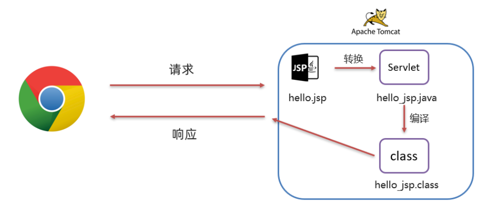
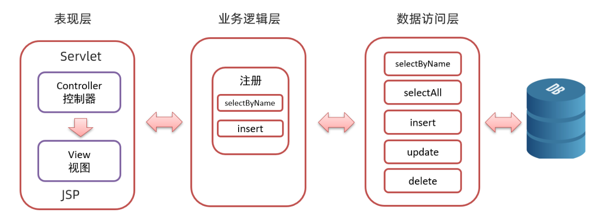
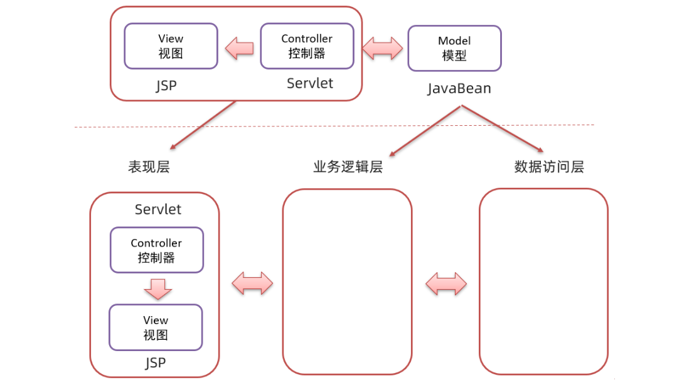

05-JSP
JSP（全称：Java Server Pages），Java 服务端页面。是一种动态的网页技术，其中既可以定义 HTML、JS、CSS等静态内容，还可以定义 Java代码的动态内容， JSP = HTML + Java。虽然说JSP技术早已过时了，但是在很多国企银行还在使用它，可以把JSP当作javaweb的发展史来学习一下。
JSP
JSP到底是什么作用呢？在前面我们使用Servlet在网页端进行动态展示，当时使用了writer.write()向前端写html标签内容进行展示，这样我们的代码就显得很麻烦。在JSP中，用html展示静态页面，用java代码展示动态数据，从而简化开发，避免了在Servlet中直接输出HTML标签。
JSP快速入门
1 | <%@ page contentType="text/html;charset=UTF-8" language="java" %> |
JSP原理
JSP 本质上就是一个 Servlet，看一看访问JSP时的流程：
（1）浏览器第一次访问 hello.jsp 页面
（2）tomcat 会将 hello.jsp 转换为名为 hello_jsp.java 的一个 Servlet
（3）tomcat 再将转换的 servlet 编译成字节码文件 hello_jsp.class
（4）tomcat 会执行该字节码文件，向外提供服务
在Servlet当中是需要我们编写代码将数据write到页面上去，但是在JSP中通过生成相应的Servlet，tomcat自动帮我们完成了这项工作。
JSP脚本分类：
- <%…%>：内容会直接放到
_jspService()方法之中；- <%=…%>：内容会放到
out.print()中，作为out.print()的参数；- <%!…%>：内容会放到
_jspService()方法之外，被类直接包含
JSP缺点
- 书写麻烦：既要写 HTML 标签，还要写 Java 代码
- 前后端没有分离
- 调试困难：出错后，需要找到自动生成的.java文件进行调试
EL表达式
EL（Expression Language ）表达式语言，用于简化 JSP 页面内的 Java 代码。
EL 表达式的主要作用是获取数据：就是从域对象中获取数据，然后将数据展示在页面上。而 EL 表达式的语法也比较简单，语法形式为：${expression} 。例如：${brands} 就是获取域中存储的 key 为 brands 的数据。
我们定义一个Servlet，在域对象中存储一些数据，然后通过数据共享（请求转发）的方式令JSP资源获取数据并展示。
1 |
|
在index.jsp资源中通过EL表达式获取数据到页面即可，但是要注意在标签中加入isELIgnored="false"表示不忽略EL表达式。
域对象
JavaWeb中有四大域对象，分别是：
- page：当前页面有效
- request：当前请求有效
- session：当前会话有效
- application：当前应用有效
例如${brands}el 表达式获取数据，会先从page域对象中获取数据，如果没有再到 requet 域对象中获取数据，如果再没有再到 session 域对象中获取，如果还没有才会到 application 中获取数据。
JSTL标签
JSP标准标签库(Jsp Standarded Tag Library) ，使用标签取代JSP页面上的Java代码。
JSTL 使用也是比较简单的，分为如下步骤：
导入坐标
1
2
3
4
5<dependency>
<groupId>jstl</groupId>
<artifactId>jstl</artifactId>
<version>1.2</version>
</dependency>在JSP页面上引入JSTL标签库
1
<%@ taglib prefix="c" uri="http://java.sun.com/jsp/jstl/core" %>
if标签
1 | <c:if test="${status == 1}"> |
foreach标签
用法一：
items：被遍历的容器
var：遍历产生的临时变量
varStatus：遍历状态对象
1 | <c:forEach items="${brands}" var="brand" varStatus="status"> |
用法二
begin：开始数
end：结束数
step：步长
1 | <c:forEach begin="0" end="10" step="1" var="i"> |
MVC模式和三层架构
MVC模式
MVC 是一种分层开发的模式，其中：
M：Model，业务模型，处理业务
V：View，视图，界面展示
C：Controller，控制器，处理请求，调用模型和视图
控制器（Serlvlet）用来接收浏览器发送过来的请求，控制器调用模型（JavaBean）来获取数据，比如从数据库查询数据；控制器获取到数据后再交由视图（JSP）进行数据展示。
MVC 好处：
有利于分工协作
有利于组件重用
三层架构
三层架构是将我们的项目分成了三个层面：分别是表现层、业务逻辑层、数据访问层。
- 数据访问层：对数据库的CRUD基本操作；
- 业务逻辑层：对业务逻辑进行封装，组合数据访问层层中基本功能，形成复杂的业务逻辑功能。例如“注册业务功能” ，我们会先调用
数据访问层的selectByName()方法判断该用户名是否存在，如果不存在再调用数据访问层的insert()方法进行数据的添加操作； - 表现层：接收请求，封装数据，调用业务逻辑层，响应数据。
整个流程是，浏览器发送请求，表现层的Servlet接收请求并调用业务逻辑层的方法进行业务逻辑处理，而业务逻辑层方法调用数据访问层方法进行数据的操作，依次返回到Serlvet，然后Servlet将数据交由 JSP 进行展示。
三层架构的每一层都有特有的包名称：
- 表现层：
com.Lijiacheng.controller或者com.Lijiacheng.web - 业务逻辑层：
com.Lijiacheng.service - 数据访问层：
com.Lijiacheng.dao或者com.Lijiacheng.mapper
MVC和三层架构
三层架构是对MVC 模式实现架构的思想。 那么我们以后按照要求将不同层的代码写在不同的包下，每一层里功能职责做到单一，将来如果将表现层的技术换掉，而业务逻辑层和数据访问层的代码不需要发生变化。
实现增删改查
这里使用三层架构做增删改查的基础操作，开发流程总结为：
- 分析业务（最重要！）
- 写sql映射配置文件
- 声明与sql配置文件对应的mapper接口函数
- 编写
service层代码，调用接口函数进行业务实现 - 编写
Servlet代码，通常是接收数据并将其请求转发进行数据共享
1、查询全部数据
这个没什么好说的，在Servlet中将brands集合里的数据共享给相应展示的jsp页面即可。
2、增加数据
业务逻辑是：在查询全部数据页面中点击链接进入添加数据的jsp页面，将jsp页面的表单数据发送给相应的Servlet，在Servlet中接收数据并封装成brand对象，调用业务逻辑层和数据访问层函数将数据添加到数据库当中；最后不要忘记了请求转发回到”查询所有”的资源。
3、修改数据
业务逻辑是：①在查询全部数据页面中点击某行数据的链接，从数据库中根据id找到对应的数据信息将它们回显到修改数据的jsp页面上。回显的流程是，通过调用”根据用户查询“的函数，将数据封装在一个brand对象中，并请求转发给修改数据的jsp页面来接收。②在前端页面修改数据后，通过将form表单中的数据传递到修改数据的Servlet中，将封装了属性的对象作为参数调用业务逻辑层和数据访问层函数将数据在数据库中进行修改，最后仍然是回到”查询所有”的资源。
在”增加“业务和”修改“业务时，需要将表单的数据通过post请求方式传递给服务器，由于存在中文乱码问题，如果不在Servlet中首先通过
setCharacterEncoding进行设置，就会出现get到的参数是乱码的问题，这里特别注意一下。
4、删除数据
根据id删除，跟上面的selectById业务基本一致，就不说了。

This is my Blog